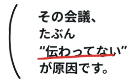

darariの横文字ほどき
横文字を、わかる日本語に。
横文字だらけの会議メモを、そのまま貼る
2変換後の文章
会議で動ける日本語にして返します
変換後の例
この機会（オポチュニティ）を規模拡大（スケール）させるには、まず困りごと（ペイン）を深掘りし、相手に届ける価値（バリュープロポジション）の理解の細かさ（解像度）を上げる必要があります。次に対応すべき担当（ボール）の所在を明確にしたうえで、各タスクを細かく分けること（ブレイクダウン）し、人手や時間（リソース）と対応できる余裕（キャパ）を踏まえて担当を決めること（アサイン）を見直します。数字を見て決めるやり方（データドリブン）な意思決定を実現するために、仕事の流れ（ワークフロー）を見て分かる形にすること（可視化）し、詰まっているところ（ボトルネック）を特定して人の手作業を減らすこと（自動化）を進めます。
用語をわかりやすく （ミニ辞書）
登録語数：0語
※ 入力した文章は外部送信しません。ブラウザの中だけで変換します。